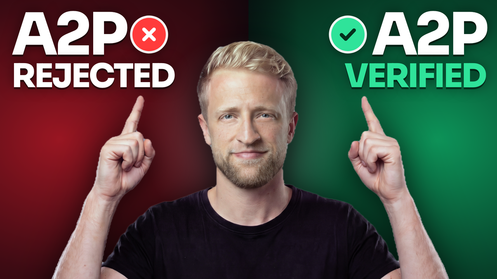
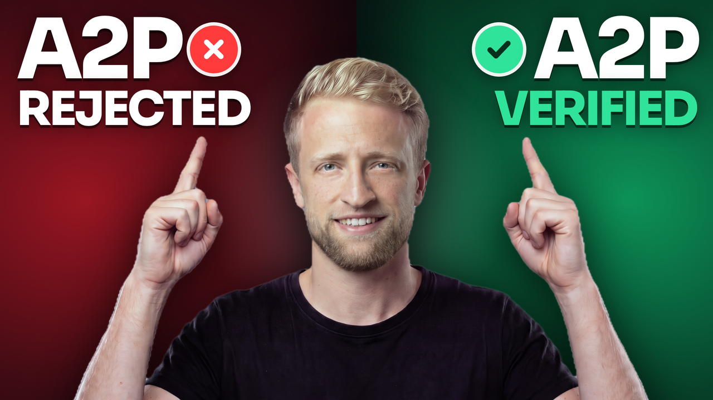
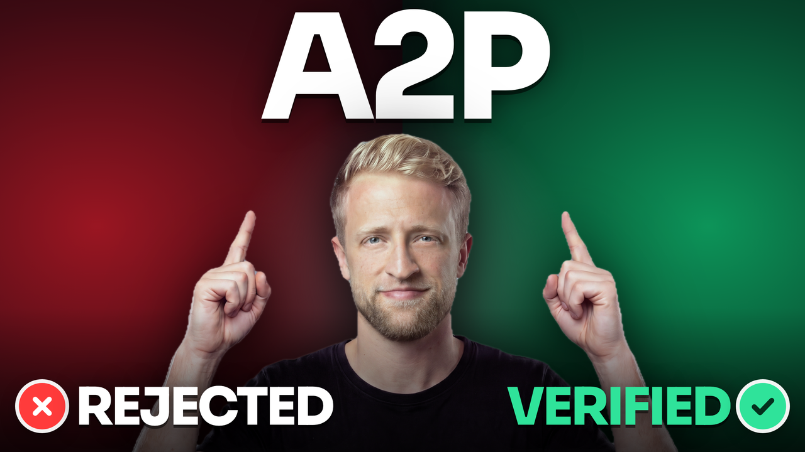

A2P thumbnails: final
Wed Nov 25. Everything is the same as before; only the rings under your eyes are weaker, on all three. Version 1 is the main thumbnail; 2 and 3 go into YouTube's test.
My call, and the data behind it
Main thumbnail: Version 1, the closed smile. It is your pick and the data backs it.
YouTube test slots (3 is the maximum):
- Version 1: closed smile (your pick).
- Version 2: same picture, smile with white teeth. One thing changed: the mouth.
- Version 3: A2P on top, the other layout you liked, same face. One thing changed: the layout.
Why:
- MrBeast's team ran about 30 videos through YouTube's own test and the closed-mouth version got more watch time every time. The gain was small and no numbers were published; it was closed mouth against an open-mouth shock face, not against a small smile.
- Our own count of 70 winning against 70 losing thumbnails of top business creators: winners show a calm face with the eyes in the lens; 1 of 70 winners has an open-mouth shock face.
- YouTube's help page warns that thumbnails that look too alike make a test run longer and often end without a winner. Versions 1 and 2 differ only in the mouth, so version 3 is in the test to make sure this video teaches us something either way.
- YouTube picks the winner by watch time share, not by clicks, and a test usually runs up to two weeks.
Limit: No public study tests a closed smile against a small teeth smile. The only number that settles it for your channel is your own test, which is why this result gets saved and read before the next video.
Sources: YouTube Help: A/B test titles and thumbnails, YouTube Help: Test and compare thumbnails, Creator Handbook on MrBeast, Social Media Today on MrBeast's thumbnail team, Tubefilter on title and thumbnail testing
My pick1. Closed smile

Download thumbnail 12. Smile with white teeth

Download thumbnail 23. A2P on top (the other layout you liked), same face

Download thumbnail 3